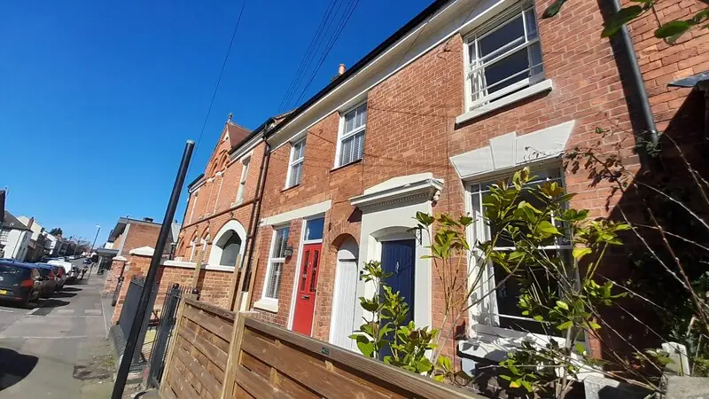

Recent cases
- Found by a letting agent, July 2026. The Negotiator reported that a Coventry letting agent forced entry to a property over rent arrears and found around 380 plants and a bypassed electricity meter. In the same week, more than 90 plants were found at a property in Mayors Croft, Canley.
- Nunts Park Avenue, January 2026. The BBC reported more than 70 plants found throughout a house after police and National Grid searched it.
- An unlicensed HMO, January 2026. Coventry Live reported a cannabis farm of around 70 plants found when council Safer Housing officers and police executed warrants on suspected illegal HMOs.
- Hipswell Highway, October 2026. More than 100 plants were found; one man was charged with cultivation and abstracting electricity.
Coventry's licensing rules
Coventry's city-wide additional HMO licensing scheme started on 4 May 2025 and runs until 3 May 2030. It covers HMOs with three or four occupants and most section 257 HMOs (certain converted blocks of flats), alongside mandatory licensing for larger HMOs. If your property is an HMO, the restoration must leave it compliant with licence conditions before you re-let.
What the Coventry cases show
- Arrears and no access are often the first sign. The Canley and arrears cases both came to light that way.
- Forced entry must be lawful. If a tenancy is still running, take advice before entering without consent. Where you believe a crime is in progress, call the police.
- Student and HMO stock around the city centre and the universities turns over quickly. Plan restorations around the academic year if you can.
Before you force entry
Two of the local cases on this page came to light through rent arrears. If the tenancy has not ended, the tenant still has rights even if they have vanished. Entering without notice or changing locks can be unlawful eviction. If you believe a crime is happening inside, call the police and let them enter. If you think the tenant has abandoned the property, take advice and document why you think so (post piling up, utilities cut off, neighbours' accounts) before you secure it. Our first 48 hours guide explains the possession rules that have applied since 1 May 2026.
CV is bigger than Coventry
The CV postcode area runs into Warwickshire: Nuneaton and Bedworth (CV10 to CV12), Rugby (CV21 to CV23), Kenilworth (CV8) and Leamington and Warwick (CV31 to CV35). Coventry City Council's licensing scheme only covers the city. If your property is in Nuneaton and Bedworth, that council has published a Crimestoppers booklet for landlords on spotting cannabis cultivation, linked below.
Student lets and the academic year
With Coventry University in the city centre and the University of Warwick on the southern edge, much of the HMO stock in Earlsdon, Canley, Tile Hill and the centre turns over every summer. Two practical points:
- Plan the restoration around the letting cycle. If the house will not be ready for the September intake, say so to the agent early. A rushed job that fails an HMO inspection costs more.
- Inspect during the summer. Houses let on 12-month student tenancies can be occupied by people the landlord has never met in July and August.
Coventry's terraces
Much of Foleshill, Hillfields and Earlsdon is late Victorian and Edwardian terraced housing. Grows in these houses usually leave damp in solid walls, damaged ceilings where ducting went into the loft, and fixings pulled through old plaster. Ask for a room-by-room scope, not a single figure.
Who to contact in Coventry
- West Midlands Police: 101. Coventry is part of the West Midlands force area.
- 105 for the meter and supply.
- Coventry City Council: housing enforcement and the additional licensing scheme.
- Crimestoppers: 0800 555 111 if you want to report something anonymously.
Questions landlords ask
The tenant has stopped paying and I cannot get in. Can I change the locks?
Not without a lawful basis. If the tenancy has not ended, changing the locks or removing belongings can be unlawful eviction. If you think a crime is in progress, call the police. Otherwise take advice from a solicitor or landlord association before entering.
Does Coventry's additional licence apply to my house?
It applies to HMOs with three or four occupants from two or more households, and most section 257 HMOs, across the city. Larger HMOs need a mandatory licence. Single-household lets are not covered by this scheme.
Do you cover Nuneaton, Rugby and Kenilworth?
We match specialists on the postcode. Tell us the full postcode and we will check coverage before passing on your details.
What we can arrange in Coventry
Guides for Coventry landlords
Other areas: Birmingham, Sutton Coldfield, Solihull, Wolverhampton, Walsall, Dudley, Sandwell, West Bromwich.
Sources
- The Negotiator: letting agent and landlord uncover cannabis farms in Coventry
- BBC News: Nunts Park Avenue raid
- Coventry Live: cannabis farm at illegal HMO
- Coventry Observer: Hipswell Highway
- Coventry City Council: additional licensing scheme 2025
- Nuneaton and Bedworth Borough Council: Crimestoppers landlord cannabis booklet
- GOV.UK: repossessing your privately rented property after 1 May 2026